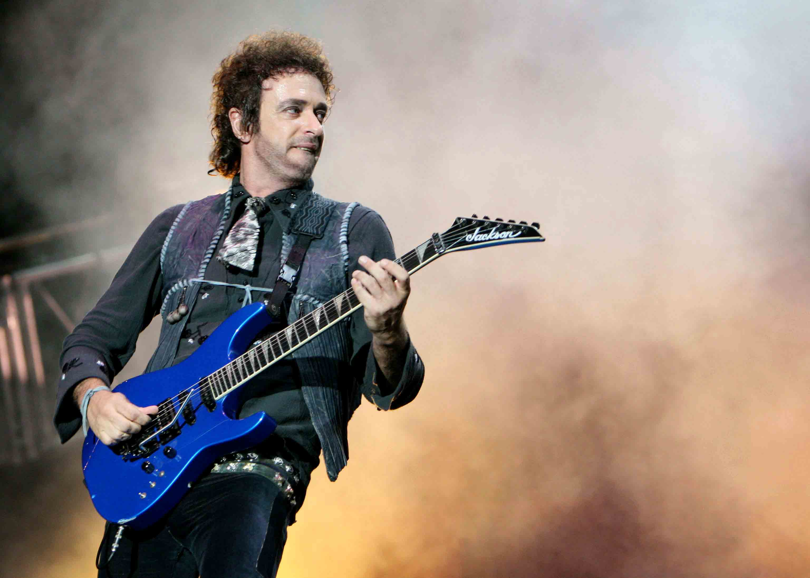

Un recorrido corto por los momentos más importantes de su carrera.
Gustavo Cerati nació el 11 de agosto de 1959 en Buenos Aires. Desde joven tocaba guitarra en grupos y escuchaba a bandas como The Beatles, The Police y The Cure, que influyeron mucho en su sonido.
En 1982 formó Soda Stereo con Zeta Bosio y Charly Alberti. La banda se volvió famosa en toda Latinoamérica con discos como Signos y Canción animal. Se despidieron en 1997 con un gran concierto en el estadio de River Plate.

Gustavo Cerati en vivo.
«Gracias totales.» — Gustavo Cerati, último concierto de Soda Stereo, 20 de septiembre de 1997
Mientras Soda Stereo seguía activo, lanzó Amor Amarillo (1993), un disco muy personal grabado en su casa en Chile. Después de la separación de la banda, con Bocanada (1999) empezó de lleno su etapa como solista.
Cerati nunca hizo dos discos iguales. Probó la electrónica, grabó sus canciones con orquesta en 11 episodios sinfónicos (2001), volvió al rock de guitarras en Ahí Vamos y terminó con el sonido más acústico de Fuerza Natural.
Haz clic en un año para ver qué pasó.